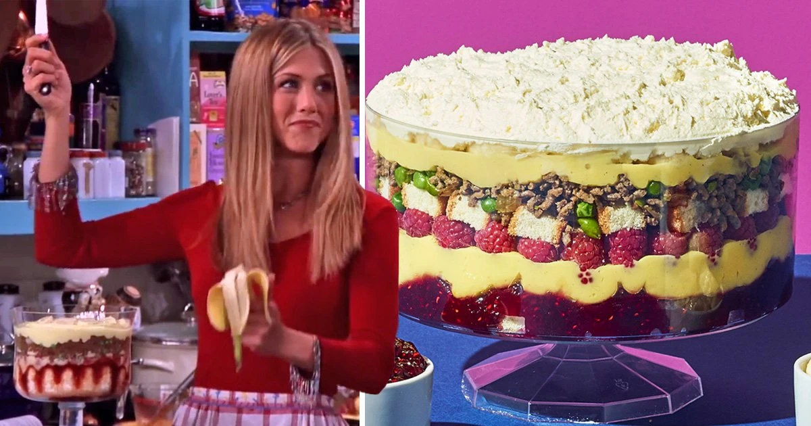

Beef Triffle

Beef Triffle is a combinations of classic Engish Triffel and shepard's pie. This recipie was invanted in a Thanksgiving episode of Friends.
Ingridients
- 3/4 pound ground beef
- 1/2 cup diced onion
- 3/4 cup frozen green peas
- 1/2 teaspoon Salt
- 1/2 teaspoon pepper
- 1 7 oz. pkg. Lady fingers, cut in half, divided
- 1 cup raspberry jam
- 4 cups vanilla custard or pudding, divided
- 2 cups fresh raspberries
- 2 bananas, sliced
- 2 cups whipped topping
Steps
- Heat large nonstick skillet over medium-high heat.
- Add ground beef and cook, crumbling with the back of a spoon until browned, about 8 minutes.
- Add onion to ground beef and cook, stirring constantly 4 minutes.
- Add peas and season with salt and pepper. Cook 1 minute. Remove from heat and set aside.
- Line bottom of trifle dish with half of the lady fingers, artfully arranging some around the perimeter of the dish. Top lady fingers evenly with jam.
- Spread 2 cups of custard over jam and top with raspberries.
- Add remaining lady fingers in a single layer over custard.
- Top evenly with sauteed beef mixture and remaining custard.
- Add sliced bananas and top evenly with whipped topping.